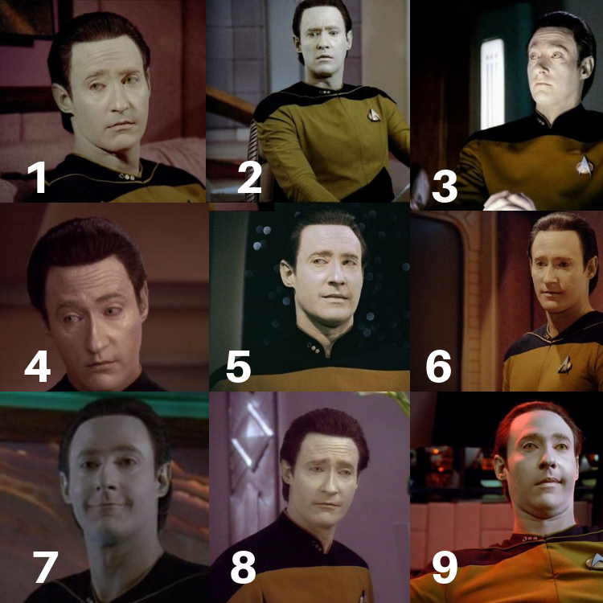
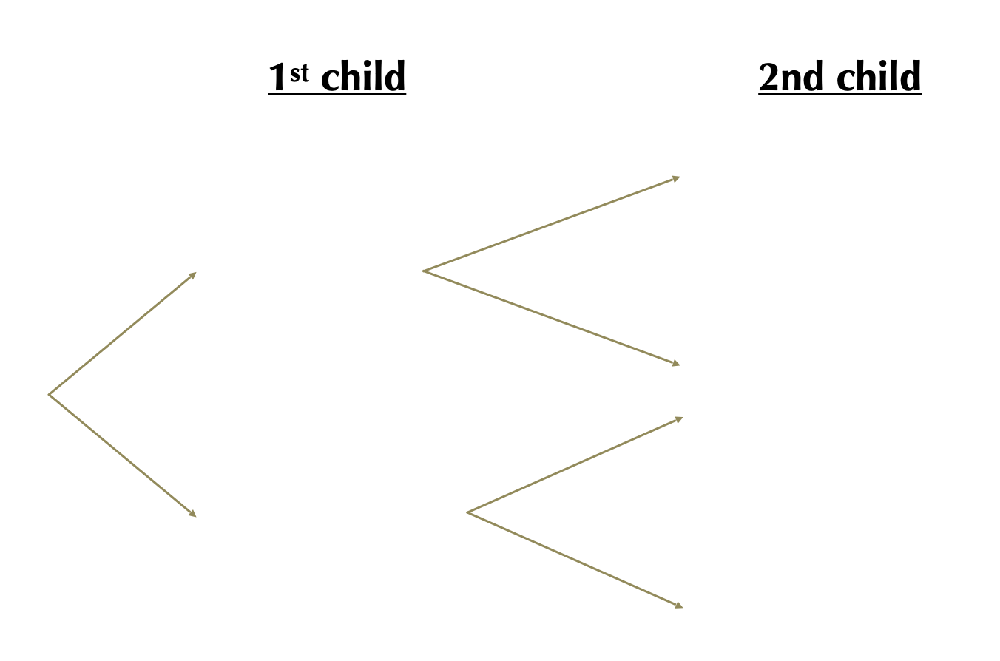
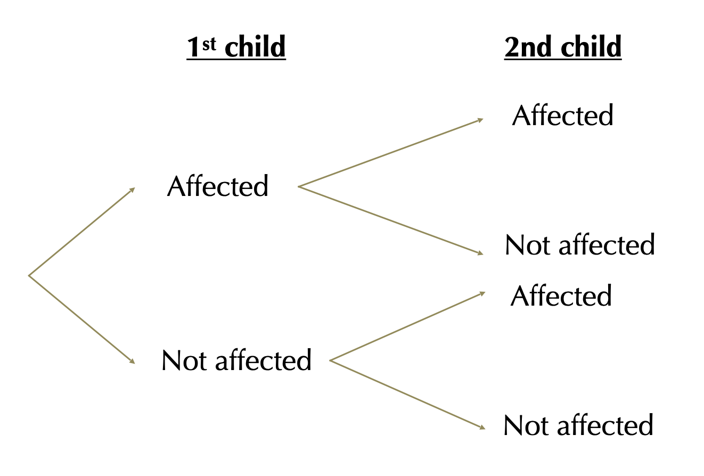
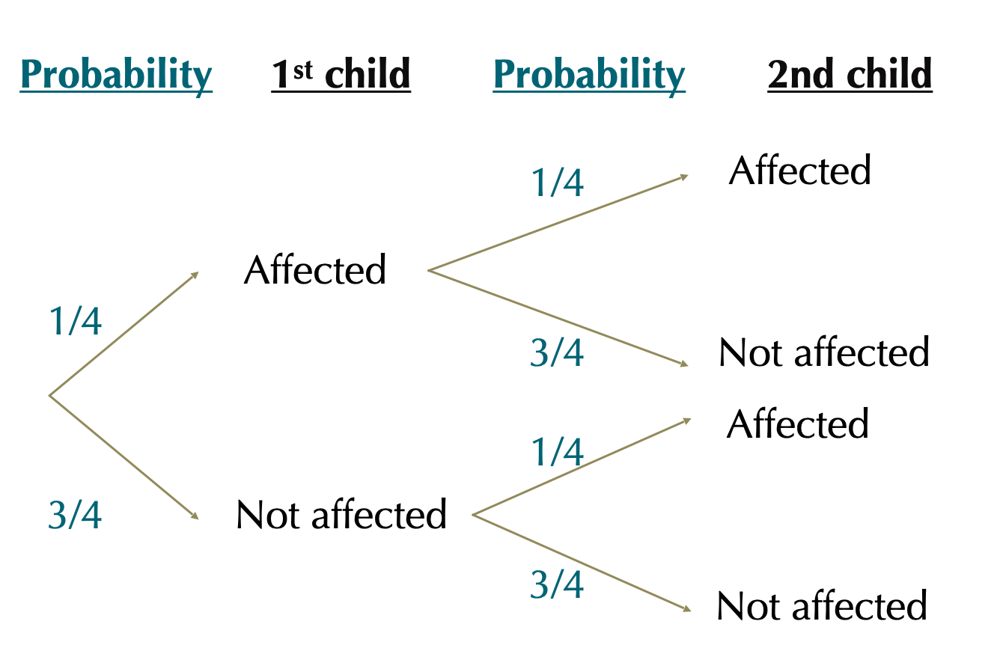
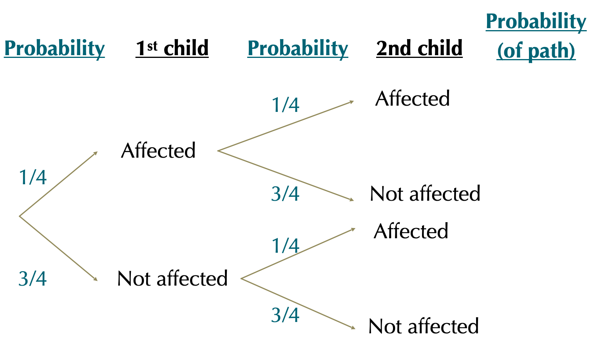
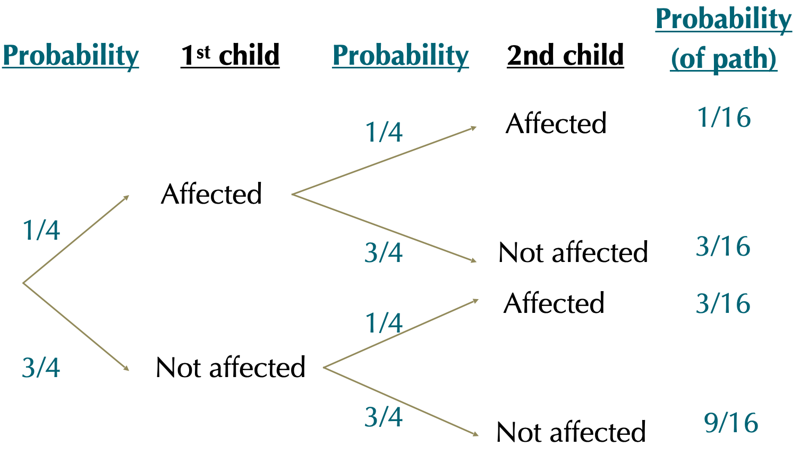
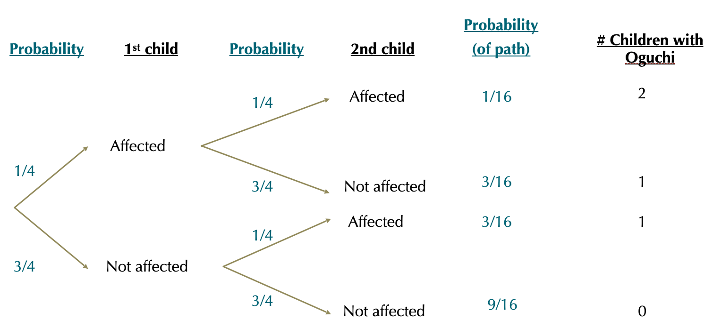

Code
| Class | n | prop |
|---|---|---|
| 1st | 319 | 0.1524857 |
| 2nd | 261 | 0.1247610 |
| 3rd | 627 | 0.2997132 |
| Crew | 885 | 0.4230402 |
Probability trees & conditional probability
September 30, 2026

99% of people are overconfident in this test
These questions were used in a study by Russo and Shoemaker (1989) and 99% of \(~1,000\) participants, but most of them included narrow ranges that included 30 to 60% of correct answers.
Similar studies done with experts answering questions in their own field of expertise led to similar results.
Oguchi disease, also called congenital stationary night blindness, Oguchi type 1 or Oguchi disease 1, is an autosomal recessive form of congenital stationary night blindness associated with (…) abnormally slow dark adaptation (From: Wikipedia)
Autosomal: not sex chromosome.
Recessive: phenotype only expressed if two copies are present (in diploids).
If both of parents have an affected chromosome but no disease, what’s the probability that their child will have Oguchi disease?
[work in pairs for a few mins]
If both of parents have an affected chromosome but no disease, what’s the probability that both of their children will have Oguchi disease?
[Work in pairs for a few minutes]
A probability tree is a diagram that can be used to calculate the probabilities of combinations of events resulting from multiple random trials. – WS
Probability theory can be hard.
Being explicit about what you’re doing makes this easier.
Probability trees offer a simple way to follow the thought process.
Write down all possible outcomes for event one, two… etc. and connect them.
Write down the probability of each outcome, conditional on their path.
Multiply each value down a path to find the probability of that path.
Repeat 1-3 for all paths.
Find probability: sum paths that lead to the same destination - i.e. the same outcome.
If both of parents have an affected chromosome but no disease, let’s answer three questions:
what’s the probability that none of their children will have Oguchi disease?
what’s the probability that one of their children will have Oguchi
what’s the probability that both will have Oguchi?
Let’s use probability trees!




Each tree tip defines a unique and mutually exclusive sequence of events. . . .


\[Pr[2\text{ Affected }] = 1/16; Pr[1\text{ Affected }] = 3/16+3/16=6/16; Pr[0 \text{ Affected }= 9/16]\]
Much of science involves identifying variables that are associated.
Events are dependent when the probability of one event depends on the outcome of another. I.e., the outcome of the
E.g. The Probability of \(A\) depends on the value of \(B\).
If \(A\) depends on \(B\):
\[Pr[A\text{ & }B]\neq Pr[A]\times Pr[B]\] In fact, in that case:
\[Pr[A\text{ & }B] = Pr[A]\times Pr[B|A]\]
Real question: did being on the 3rd class make you more likely to die on the titanic?
Statistical/probability hypothesis: Survival and sitting in the 1st class are independent.
If survival and sitting in 1st class are independent:
\[Pr[\text{ 1st class & survived }] = Pr[\text{ 1st class }] \times Pr[\text{ survived }]\]
Adults by class
Predictions: Of the 2,092 Adults on the Titanic
319 [\(\approx 0.152\)] sat in 1st class.
654 [\(\approx 0.312\)] survived.
If survival and sitting in 1st class are independent:
\[Pr[\text{ 1st class & survived }] = Pr[\text{ 1st class }] \times Pr[\text{ survived }]\]
Expected number of 1st class adults to survive: \(0.152\times0.313=0.047576 \times2092 = 99.52899\approx100\) 1st class adults would survive.
Expected number of non-1st class adults to survive: we expect \((1-0.152)\times0.313=0.265424 =0.26\times2092 \approx 554\) other adults would survive
Reality:
Adults by survival status and class
Reality: surviving the titanic seems to* depend on class
More 1st class passengers survived than expected.
Fewer other passengers survived than expected.
The conditional probability of an event is the probability of that event occurring given that a condition is met.
\(Pr[X|Y]\) (read “\(|\)” as “given”.)
\(Pr[X|Y]\) means the probability of \(X\) if \(Y\) is true.
\(Pr[\text{ Survive| Adult in 1st class}] = 197/319 = 0.62\)
\(Pr[\text{ Survive| Adult NOT in 1st class}] = 457/1773 = 0.26\)
Convert conditional probabilities (\(Pr[X|Y_{i}]\)) to total probabilities (\(Pr[X]\)) by
\[Pr[X]=\sum{(Pr[X|Y_{i}]\times Pr[Y_{i}])}\]
\[Pr[X]=\sum{(Pr[X|Y_{i}]\times Pr[Y_{i}])}\]
\(Pr[\text{Survive}]=\sum{(Pr[\text{Survive}|\text{Class}_{i}]\times Pr[\text{Class}_{i}])}\)
\(Pr[\text{Survive}]=\sum{(Pr[\text{Survive}|\text{1st class}]\times Pr[\text{1st class}])}+\)
\(Pr[\text{Survive}|\text{NOT 1st class}]\times Pr[\text{NOT 1st class}])\)
\(Pr[\text{Survive}]=(0.62\times 0.152)+(0.26\times 0.848)\)
\(Pr[\text{Survive}]=0.314\)
Try it!